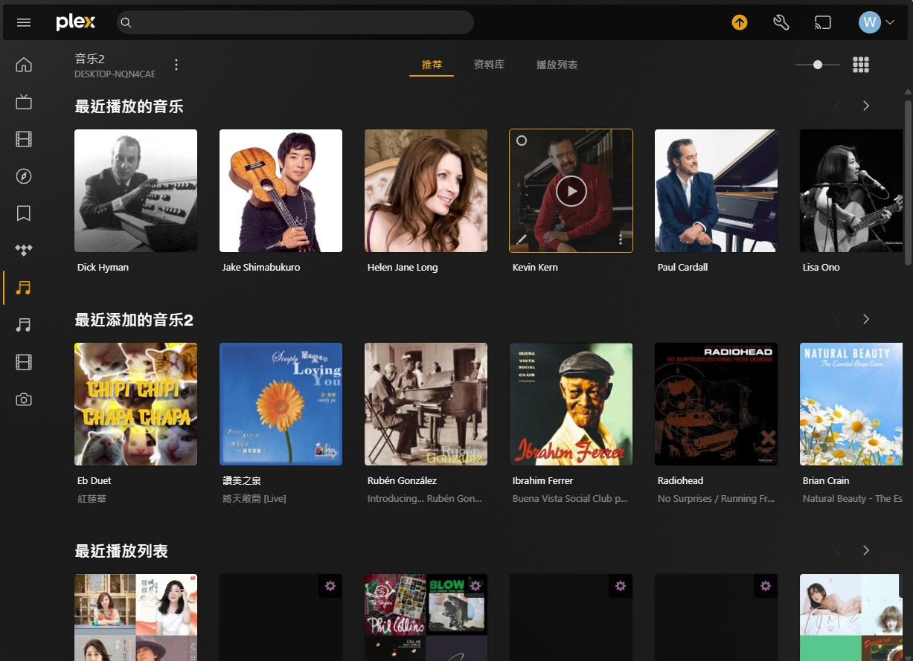
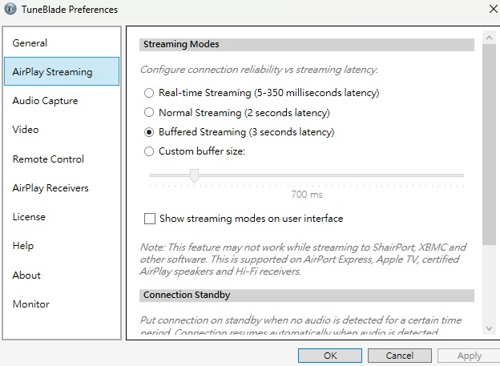
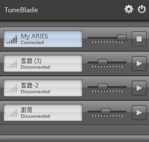

PLEX-好用的多媒體伺服器軟體

PLEX-雖然以前就聽過這一套多媒體伺服器軟體，但是因為以前沒有在手機或是其他Client聽電腦內音樂檔案的需求，所以就沒有很在意PLEX這個軟體。不過後來因為接觸Hi-Res的音樂，對於音樂音質的要求越來越高，所以就先後安裝了ROON，Audirvāna，Foobar2000。前者是支援度還有介面都做得最好的軟體，只是每個月12鎂實在太貴所以就忍痛放棄。Audirvāna較為便宜，但是它只能安裝在PC，MAC還有Linux上，也不能用Audirvana聽自己電腦內的音樂檔（ROON和Foobar2000都可以遠端連線聽自己電腦內的音樂）。Foobar2000則是免費，而且免費的資源最多，但是因為介面陽春，加上遠端連線聽電腦內的音樂比較麻煩，所以就只好放棄。
後來在搜尋的過程中，又突然想到PLEX這個軟體，看到這個軟體似乎還蠻符合我現在的需求，所以我就下載安裝了。PLEX不僅可以整理/管理音樂檔案和播放Tidal的功能，也可以整理影片檔，而且PLEX本身有強大的資料庫，你把影片檔放進PLEX，多半都可以找到影片的資料。另外，PLEX也有整理照片的功能，不過我本身沒有使用所以就不介紹了。一個軟體月租只要5鎂，還可以整理音樂，影片，照片的功能，真的是太划算了。
但是PLEX也有缺點，它只能用Chromecast的方式將音樂投放至其他支援Chromecast的裝置，否則你就只能在平板或是手機上聽自己電腦內的音樂。這也難怪縱使PLEX這麼便宜，音樂愛好者依舊不會使用它（因為音樂愛好者都用upnp或airplay，Chromecast是幾乎沒人用的）。
好在PLEX有針對音樂愛好者推出PLEXAMP這個軟體，這個軟體有行動裝置版本以及PC的版本。在行動裝置上，要收聽Hi-Res甚至24bit的音樂都不成問題。只是如果要從PC用airplay的方式，投射到其他設備上，就勢必會受到airplay的限制(16bit/44.1KHz)。但是如果假設你的前級DAC或是NAA可以Upsampling，那也不失為一個增加聆聽體驗的一個方案。如果用在PC使用airplay的方式投射音樂，推薦使用Tuneblade，簡單好用，只要把delay調到3秒以上，在聆聽方面基本上都不會遇到播到一半中斷的情形。


最後，如果想要可以在電視上顯示PLEX Client目前前正在播放的音樂，可以在Raspberry Pi安裝Tautulli，只要在播放時連線到http://你的raspberrypi IP位置:8181，就可以看到你目前播放的歌曲了。所以PLEX真的比想像中的還要強大，比想像中的還要好用啊!
延伸閱讀:
Audirvana Origin-電腦音樂整合的另一個選擇 Tuneblade官網另外，美國購物代運可參考:
https://a1253247.blogspot.com/p/hopshopgo-vs-spexeshop.html
對板球有興趣的可參考:
https://a1253247.blogspot.com/2022/05/cricket-line-written-by-admin-24-10.html
對生活飲食有興趣，可參考: